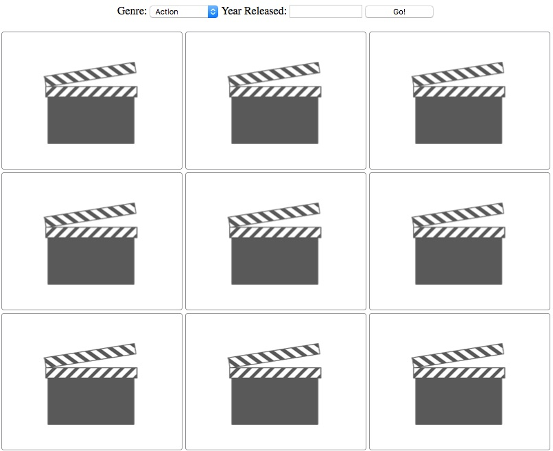
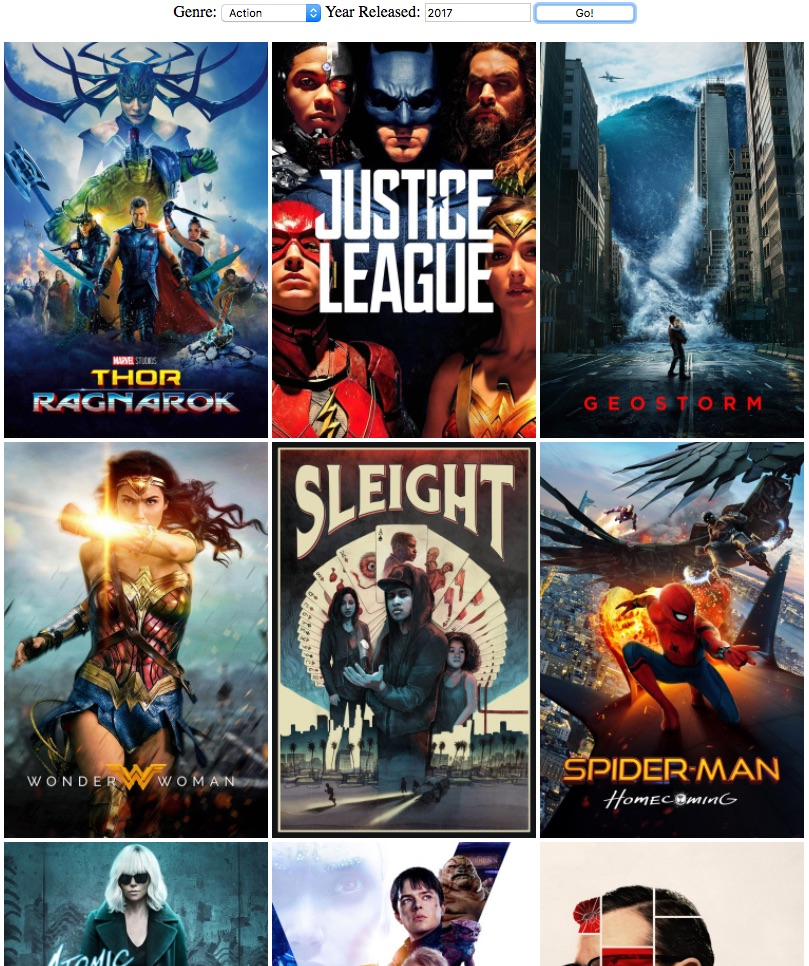
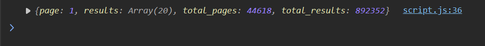
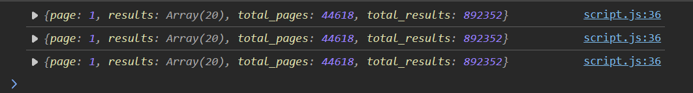
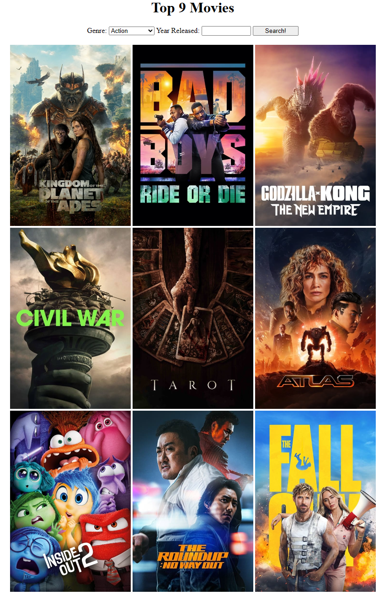
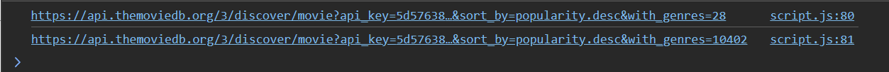
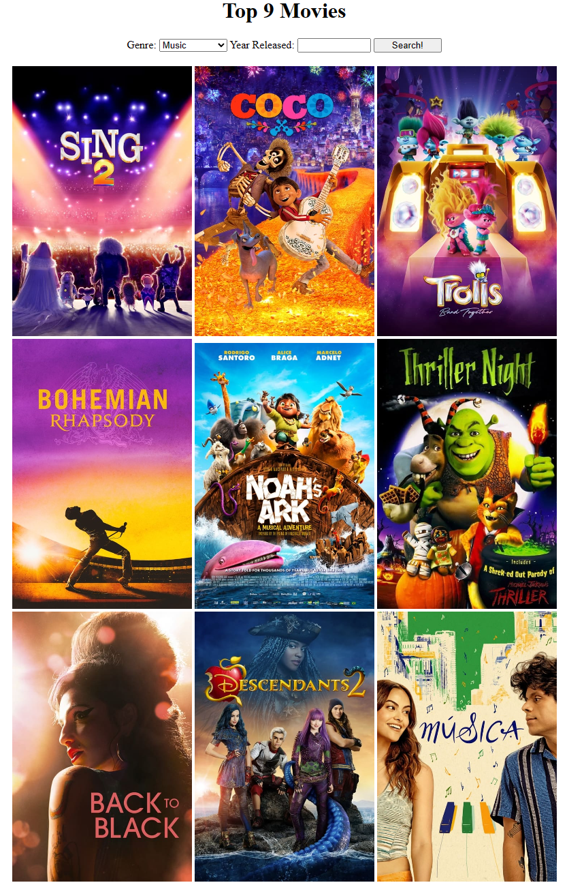
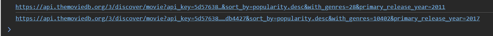
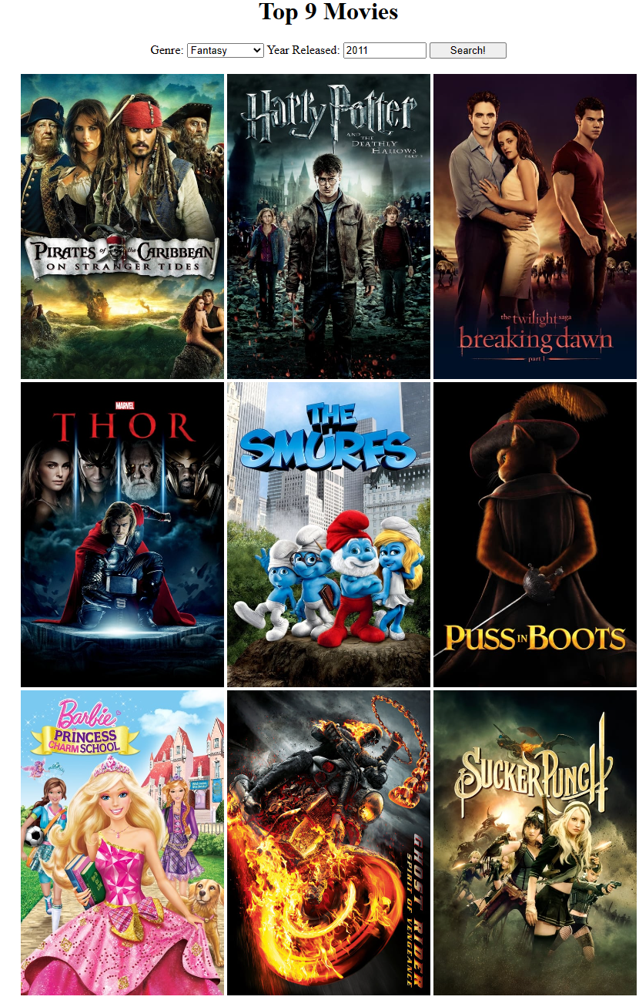

Project: Top Nine Movies
For this project, we will be building a website that finds and displays the 9 most popular movies for a specific category and year.
It would be a good idea to be familiar with:
- Reading and Understanding HTML and CSS files.
- Implementing and Calling functions that return values.
- Getting and editing elements using jQuery.
- Event handling using jQUery.
- Calling APIs using
$.getJSON. - Constructing API URLs with multiple query parameters.
- Authenticating API Calls with an API Key
Prerequisite: API key from TMDB
This project will require that you have a working API key from TMDB. If you don't currently have one, you can follow this guide to get one.
To authenticate your API calls, we will add the API key in your API URL as a query parameter.
API Reference
Check out this documentation for the TMDB API that you will be using. You don't need to look at all the possible query parameters, but try to take note on how you can filter by genre and year.
Initial State
-
Initially appears with a grid of 9 placeholder images in 3 rows.
-
Above the grid, there is a dropdown (select) menu for selecting a Genre. This dropdown defaults to "Action".
-
Above the grid, there is also a text input for entering a Release Year. This is an optional input with no default value.
-
There is also a button labeled "Search!", which will trigger the search.

Expected Result
-
After a user enters search criteria and clicks the "Search!" button, the application should query TMDB's Discover API for movies that match the criteria.
-
The movies should be returned in order of decreasing popularity, with the most popular movies returned first.
-
The 9 placeholder images in the grid should be replaced with cover images of the top 9 movies matching the provided criteria.

Instructions
Part 0: Inspect the provided starter files and add your API Key
The first step in any project where there is starter code is to make sure you understand what the current code contains and what it is doing.
-
Read through
index.htmlandstyles.cssand get a good idea of what they contain. -
Pay special attention to the HTML elements in the "movies"
<div>, the "genre"<select>, and the "year" text<input>. -
Inspect
script.jsand look at the unimplemented functions. Take note that at the top, theBASE_URLfor the API is given to you. -
Read through all of the comments that explain what each function should do.
-
Replace the
apiKey="PASTE_API_KEY_HERE"with your actual API key from your TMDB account. TheBASE_URLis built with thisapiKey, so you won't have to do this with each API call yourself. -
Open
index.htmlin Live Server, and move on to Part 1.
Part 1: Calling the API
We want to incrementally add functionality so that we can test and make sure everything works as we go. The first thing that we will do is make sure that our API calls are working before doing things like adding event listeners and query parameters.
-
Implement the
getMoviesfunction with$.getJSON. Log the response to the console. Make sure that we are using theurlparameter instead of theBASE_URLinside the function implementation. -
Underneath the
getMoviesimplementation callgetMovieswith theBASE_URL. -
Save your code, and check to see that you see something simliar in your browser's Developer Console:

Part 2: Attaching the Event Listener
Since the API works properly, let's make it so that whenever the "Search!" button is clicked, we call our API using the function above.
-
Delete the
getMoviescall we wrote in the last part. -
Add a "click" event listener to the "Search!" button, and provide it with an event handler function that calls the
getMoviesfunction whenever the button is clicked. -
Save your code, and check to make sure that every time you click the "Search!" button, a new line appears in your Developer Console. In this example, I clicked the button 3 times:

Part 3: Set Movie Posters using Response
After testing the above functionality, let's utilize the API data to change the placeholder images that we are displaying on the web page.
-
Implement the
setMoviePostersfunction so that it loops over the first 9 results inmoviesand changes the corresponding<img>element'ssrcattribute to the poster URL. Take note that:-
The image url to set the movie poster image isn't fully stored in each
movieobject. Instead, aposter_pathproperty contains the end portion of the URL. -
For more information on how this works, check out this documentation about it.
-
-
Make sure to check out the comments above the
setMoviePostersfunction to get a bit of pseudocode and explanation on how to implement it. -
Edit
getMoviesso that instead of logging the data to the console, we get theresultsarray of movies it contains, and pass that array to thesetMoviePostersfunction to display the movie posters. -
Ensure that when you click the "Search!" button, you see 9 movies on your screen (You might see different ones since this API is live, and the data is constantly changing):

-
Since we haven't implemented any query parameters yet, if you click the "Search!" button multiple times, you will see the same results.
Part 4: Add the "Genre" Query Parameter
Pressing "Search!" and getting the exact same results every time isn't very useful to the user, so let's introduce the "Genre" Query Parameter.
From the API Documentation at the top, you should have seen that there is a query parameter "with_genres", which takes a list of genre ID values.
To save you the trouble, here's the list of Genre IDs we use in the select box:
- Action = 28
- Adventure = 12
- Animation = 16
- Comedy = 35
- Crime = 80
- Documentary = 99
- Drama = 18
- Family = 10751
- Fantasy = 14
- History = 36
- Horror = 27
- Music = 10402
In index.html, the dropdown selection already maps each genre name to genre ID. But, if you'd like, you can look at the list of genres here by clicking "Try It!".
-
Scroll to the bottom and look at the
constructURLfunction, which takes agenreandyear, and constructs a URL with them. -
Implement
constructURLso that it appends thegenrequery parameter to theBASE_URLand returns it.-
Take note that in the
<select>dropdown, there is no "Any" option, which means that selecting agenreis REQUIRED. Do you need a conditional to check ifgenreis an empty string? -
Take note of our
BASE_URL. Are we adding the first query parameter? Remember that to add multiple query parameters, we need to separate them using"&"symbols:"https://example.com/api?query1=value1&query2=value2&..."
-
-
Verify that the function is working correctly by uncommenting the 2 example
console.logstatements for Part 4, and inspecting the output in the Developer Console. Once you have verified that it is correct, re-comment the example calls:
-
In the "click" event handler, get the genre selection from the DOM, and save it to a variable. Call
constructURLwith this variable, and save it to a new variable. -
Instead of calling
getMovieswith theBASE_URL, call it with the result ofconstructURLabove. -
Save your code, and in Live Server, select some genres from the dropdown and click "Search!". Finally, select "Music" as your genre, and make sure that the result looks like this:

Part 5: Add the "Year" Query Parameter
Finally, we want to allow our user to filter movies not only by genre, but optionally the Release Year of the movie, as well.
Back in the documentation link, you should have seen a parameter called "primary_release_year". This is the query parameter we will be using.
-
Head back to
constructURL, and re-implement it by adding in the release year as well. -
Note that since "Year Released" is a text box and can be left empty, it is NOT required, which means that we will need to check if it exists prior to adding it in.
-
Verify that the function is working correctly by uncommenting the 2 example
console.logstatements for Part 5, and inspecting the output in the Developer Console. Once you have verified that it is correct, re-comment the example calls:
-
In the "click" event handler, get the value of the "Year Released" text input, and save that to a variable as well.
-
Now, pass both the genre and year to the
constructURLcall. -
Save, and test your code. Provide several different genres and release years to test on your own, then, provide "Fantasy" as the genre, and "2011" as the release year:
